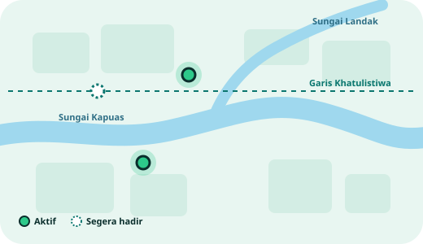

Pilah sampahmu, kumpulkan Eco Point
Setor sampah terpilah di Smart Waste Station EcoBin di Indomaret dan Alfamart Pontianak, lalu tukarkan poinnya dengan voucher belanja.
Sampah yang dipilah punya nilai
Organik, plastik, kertas, dan residu masih sering berakhir di satu kantong. Begitu tercampur, sampah sulit diolah dan bahan yang sebenarnya bisa didaur ulang ikut terbuang.
EcoBin menaruh Smart Waste Station di gerai Indomaret dan Alfamart yang sudah kamu kunjungi setiap minggu. Stasiun memeriksa sampahmu, mencatat beratnya, dan memberimu Eco Point. Sampah yang terkumpul kami salurkan ke mitra pengolah sesuai jenisnya.
Sejalan dengan Tujuan Pembangunan Berkelanjutan
Untung buat yang setor, untung buat yang bermitra
Enam langkah dari rumah sampai voucher
Sampah yang tercampur atau masuk ke lubang yang salah akan ditolak dan dikeluarkan kembali, dan tidak menghasilkan poin.
Di balik layar
Tiga lubang, tiga kategori
Kategori dapat bertambah sesuai kemampuan stasiun dan kebutuhan mitra.
Hasil setoran warga Pontianak sejauh ini
Angka contoh untuk keperluan prototipe.
Cari stasiun terdekat
Stasiun EcoBin pertama hadir di Pontianak. Pilih jaringan gerai untuk menyaring daftar.

Yang kami bangun dan jalankan
Bersama mitra dan warga
Kata mereka
Nama mitra dan testimoni di atas adalah contoh untuk prototipe. Kerja sama dengan pihak yang disebut masih berupa rencana.
Yang sering ditanyakan
Bangun program lingkungan bersama EcoBin
Kami mencari gerai untuk lokasi stasiun, penyedia reward, mitra pengolah sampah, dan brand yang ingin menjalankan program CSR. Ceritakan rencana Anda, tim kami akan menghubungi Anda.